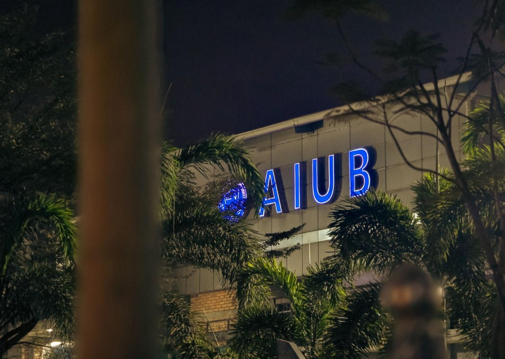
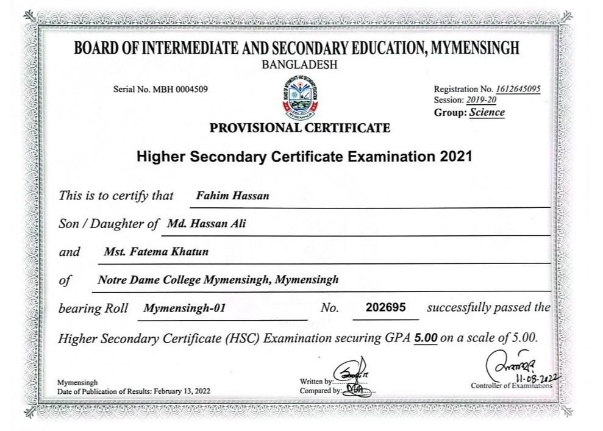

Education

Bsc in CSE
I am currently pursuing a Bachelor of Science (B.Sc.) in Computer Science and Engineering at American International University-Bangladesh (AIUB). I am in my 8th semester and have completed 97 credits so far. In the current semester, I am enrolled in 15 additional credits. My current cumulative GPA (CGPA) is 3.87..

Higher Secondary Certificate (HSC)
I successfully completed my Higher Secondary Certificate Examination in 2021 under the Board of Intermediate and Secondary Education, Mymensingh, from Notre Dame College Mymensingh. I achieved a GPA of 5.00 out of 5.00 in the Science group, demonstrating strong academic performance and dedication to my studies.

Secondary School Certificate (SSC)
I completed my Secondary School Certificate (SSC) in 2019 from Shibganj Govt. Model High School, Nawabganj under the Board of Intermediate and Secondary Education, Rajshahi. I achieved a GPA of 5.00/5.00 in the Science group.

Junior School Certificate (JSC)
I completed my Junior School Certificate (JSC) in 2016 from Shibganj Govt. Model High School, Nawabganj under the Board of Intermediate and Secondary Education, Rajshahi. I achieved a GPA of 5.00/5.00.